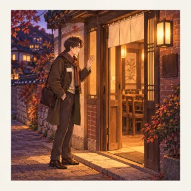
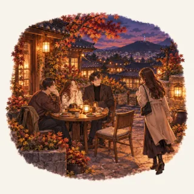
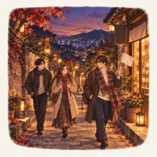
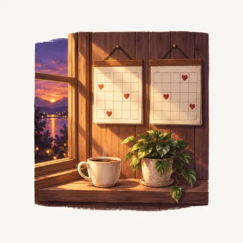

주요 이용 규칙
- 닉네임은 닉네임 지역 성별 출생년도 입장일 순서로 정합니다. 예: 엑서 논현 남 88 0125 양식 보기
- 입장 후 2주 안에 첫 모임(벙)에 참여합니다. 첫 모임은 음주 상태로 참여할 수 없습니다. 참여 기준
- 모임은 공지의 참석 버튼으로 신청합니다. 중간 합류는 모임장(벙주)에게 먼저 연락합니다. 모임 참여
- 모임 비용은 1/N이 원칙입니다. 정산 내용을 확인한 뒤 신속히 입금합니다. 정산 절차
- 모든 멤버는 2개월에 1회 이상 모임에 참여합니다. 정기 참여
- 불편한 일은 운영진에게 1:1로 알립니다. 공개 채팅방에서 문제 삼지 않습니다. 대화 매너
처음 2주 안내
들어온 날부터 첫 모임까지, 순서대로 하면 됩니다.

들어온 날
닉네임을 양식에 맞춥니다. 공지를 먼저 읽습니다.

2주 안에 첫 모임
공지의 참석 버튼으로 신청. 첫 모임은 음주 상태 불가.

첫 모임 뒤
신입 표시가 사라지고, 모임 개설과 게스트 초대가 가능해집니다.

그 뒤로
2개월에 1회 이상 참여합니다. 어려우면 운영진에게 미리 알립니다.
닉네임은 이렇게
엑서닉네임
논현지역
남성별
88출생년도뒤 두 자리
0125입장일월일 네 자리
완성 예: 엑서 논현 남 88 0125. 다섯 부분을 띄어쓰기로 잇습니다. 바꾸는 건 입장 후 1회만. 자세히
모임 가기 전 확인
- 참석 버튼을 눌렀는지. 누르지 않으면 참석 명단에 들어가지 않습니다.
- 시간과 장소를 다시 확인합니다. 늦거나 못 가게 되면 모임장에게 바로 알립니다.
- 중간 합류라면 모임장에게 미리 연락합니다.
- 모임이 끝나면 정산 내용을 확인하고 입금합니다. 금액이 이상하면 모임장에게 먼저 확인합니다.
운영진에게 연락하는 법 오픈채팅에서 운영진 닉네임을 눌러 1:1 대화를 열면 됩니다. 규칙에 없는 상황, 불편한 일, 오래 못 나가게 된 사정은 모두 이 길로 알려 주세요. 오픈채팅 열기
검색 결과가 없습니다. 다른 검색어를 입력해 주세요. 예: 정산, 닉네임, 재입장
이 문서는 2026년 9월 20일에 마지막으로 정리했습니다.규칙이 바뀌면 공지로 먼저 알립니다. 소식 보기